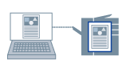

Сохранение данных для печати
Данные для печати можно сохранить в папке в принтере. Также можно изменять настройки печати сохраненных в папках данных для печати, и объединять их.
|

|
|
Сохранение данных для печати в папке в принтере
|
1.
Откройте вкладку [Основные настройки], [Макет страницы], [Окончательная обработка], [Источник бумаги] или [Качество].
2.
Выберите [Способ вывода] → [Сохранение] → нажмите [Да].
3.
Задайте настройки [Наименование данных] → выберите место сохранения из списка [Почтовые ящики]/[Папки входящей почты пользователя]/[Почтовый ящик] → нажмите [ОК].
Чтобы выбрать несколько папок для сохранения:
Отдельные номера: удерживая нажатой кнопку [Ctrl], выберите соответствующие номера
Последовательные номера: удерживая нажатой кнопку [Shift], выберите первый и последний номера
4.
Нажмите [ОК] на экране драйвера принтера.
5.
Нажмите кнопку печати в приложении.
Данные для печати отправляются в место для сохранения в принтере. Данные выводятся согласно инструкциям, подаваемым с панели управления принтера или с помощью удаленного пользовательского интерфейса.
Справки
Если данные сохраняются в папке, для которой установлено [Вкл.] в столбце [Печать контрольного оттиска] списка, в диалоговом окне [Сохранение деталей] → [Почтовые ящики]/[Папки входящей почты пользователя]/[Почтовый ящик], одновременно с отправкой данных для печати в папку выполняется контрольный оттиск.
Для получения информации о папках принтера и применения ее в диалоговом окне [Сохранение деталей] нажмите [Опред-е сост. устройства] во вкладке [Настройки устройства].
Чтобы получить возможность указать номер папки при выполнении печати, выберите [Указать номер почтового ящика для сохранения]/[Указать номер входящей почты для сохранения]/[Указать номер почтового ящика для сохранения] во вкладке [Настройки устройства].
Для некоторых моделей принтеров следующие настройки отключены и автоматически настраиваются при сохранении данных печати.
[Макет страницы]-[Параметры страницы]-[Наложение]
[Окончательная обработка]-[Дополнительные настройки]-[Сведения примечания к заданию]
[Источник бумаги]-[Выбор бумаги]-[Вставка листов]
[Источник бумаги]-[Настройки передней/задней стороны обложки]
[Качество]-[Дополнительные настройки]-[Разрешение]-[1200 dpi]